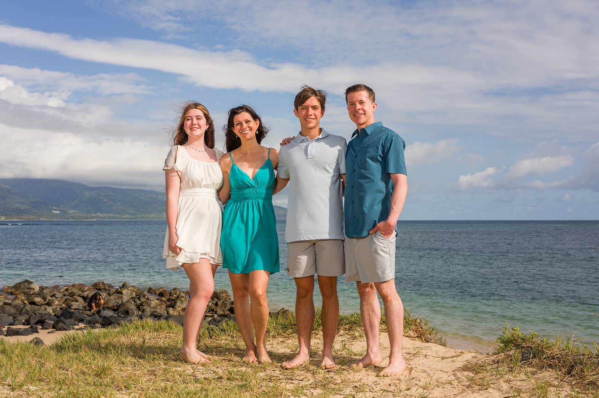
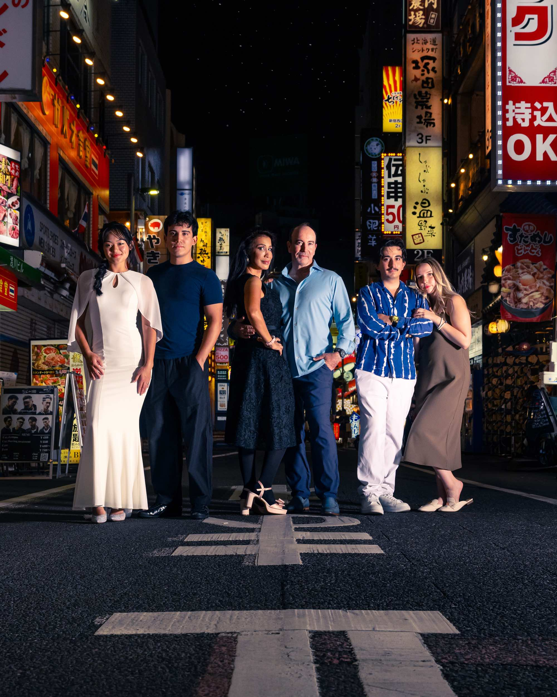

Maui, Beautifully Remembered.
We’re the Balters—a family of photographers with more than 25 years in Maui and over 1,000 five-star reviews.
Be present with the people you love.
We’ll guide the light, the movement, and the little moments—so you can enjoy Maui and remember how it felt.
Thousands of stories told. With one enduring promise.
- 25+ years photographing Maui
- Family-run by Laurence, Jude, Max & Solomon Balter
- Wailea, Makena & South Maui
- Sessions by request
- Galleries delivered in under 48 hours

“They were a pleasure to just speak with and get to know. These pictures will be a special memory and souvenir of our trip.”
Nicole booked a family session with Laurence and Jude, along with senior portraits for her son. Her photographs and words capture what matters most to us: a relaxed experience, real connection, and memories that belong to the family.

Photography that feels alive.
Movement. Atmosphere. Emotion. Images that feel less like portraits and more like scenes from your own story. No AI, all images hand edited.
Some photographs document a moment.
Others become a part of the family archive.
We create portraits in extraordinary Maui light, with direction that feels natural and an experience that never feels rushed.
The result is more than a gallery of vacation photos. It's a visual record of who you were — together — in Maui.


We guide the moment to its natural conclusion.
The laughter, the dance, the movement, the glance back — the unplanned.


Timeless, for generations to enjoy.
Because life happens fast.
What brings you to Maui?
Explore an experience shaped around the people and the moment you want to remember.



Aloha, we're the Balters.
Whenever we travel with our family to some place spectacular, we hire a professional photographer. It makes all the difference.
More than a quarter century ago, our family made Maui our home. For over 25 years, Laurence, Jude, Max, and Solomon Balter have been creating timeless photographs for families visiting South Maui.
Every single session is photographed personally by one of us—never an outside contractor or temp photographer. We treat your family like our own family, taking the time to ensure everyone feels relaxed, comfortable, and truly at ease in front of the lens.
Explore Sessions & Rates